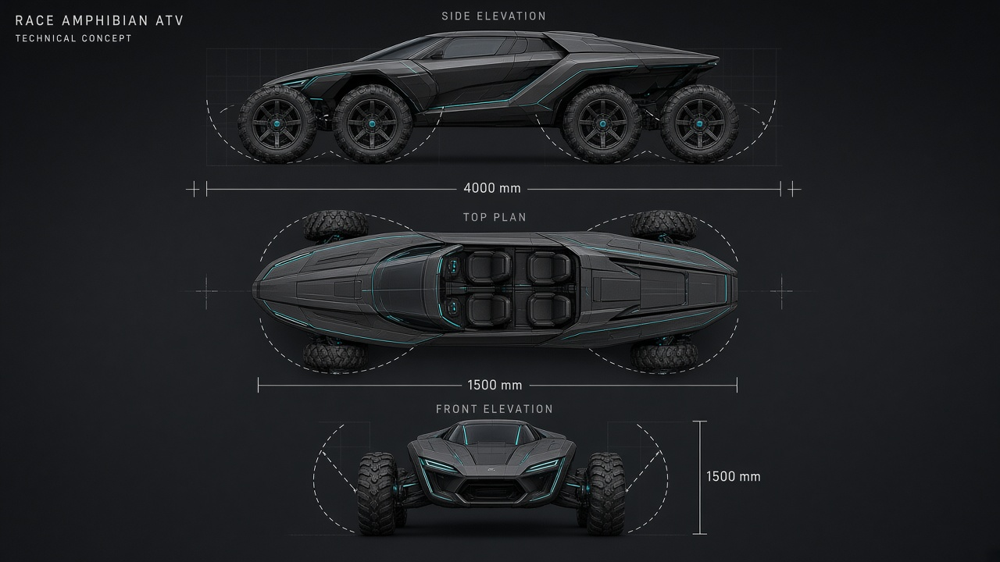

AQUILON
R4 Race Amphibian
A 4.0 × 1.5 m four-seat land–water racer with flush-folding wheels and a sealed monocoque hull.
Concept direction
Stealth-wedge geometry over a planing hull. Graphite composite skin, ice-cyan race accents, and a continuous canopy for a 2×2 race cockpit.
Folding wheel system
Each corner uses a sealed swing-arm that pivots the wheel up into a hull pocket, clearing the waterline and sealing the bay for planing speeds.
Package & seating
Narrow race envelope: 4000 mm long, 1500 mm wide. Four bucket seats in a 2×2 grid under one canopy.

Specification sheet
Target envelope for a four-seat race amphibian ATV.
| Parameter | Target |
|---|---|
| Length × width | 4000 × 1500 mm |
| Height (land / water) | ~1450 mm / ~1100 mm canopy |
| Seating | 4 × race buckets, 2×2 |
| Dry mass (target) | 980 kg |
| Land drive | 4× in-hub electric, 320 kW combined |
| Water drive | Twin axial waterjets, 2× 140 kW |
| Wheel fold cycle | ≤ 1.8 s, interlocked with jet arm |
| Hull | Carbon–Kevlar monocoque, planing V-chine |
| Canopy | Polycarbonate sealed bubble, roll cage integral |
| Style | Futuristic stealth wedge · graphite / ice-cyan |
AQUILON R4
Four seats. Two elements. One fold.
Concept package for a compact race amphibian: land ATV aggression, waterplane silence, and a folding undercarriage that disappears into the hull.